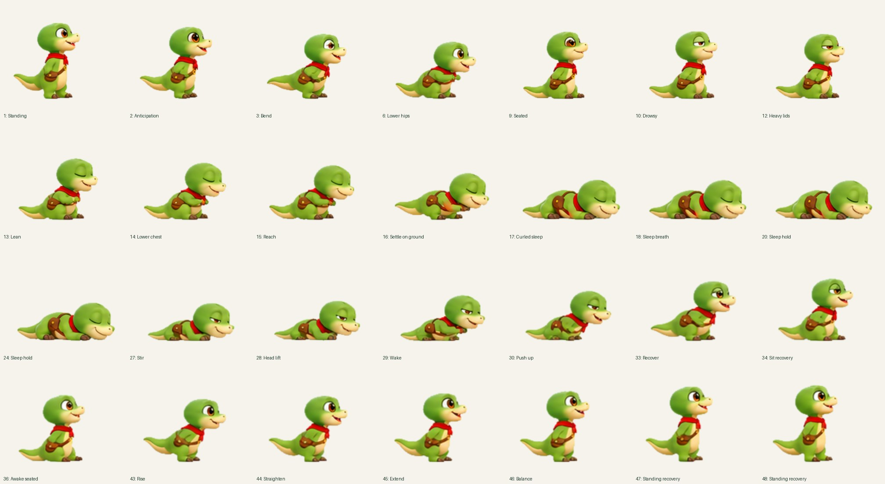

Studio history · Previous sprite engine · Approved gaitV0.7.1 / IDENTITY-LOCK REVIEW · NOT APPROVED
One character. Five anchors.
28 curated whole-body poses from a single source, registered by estimated head scale and hip position. A shorter gold-pose review and a complete floor-rest sequence share the exact same artwork.
Loading…
Identity anchor candidates
Click a pose to inspect it at the same scale. The original character remains the visual authority.
Original approved turnaround

All 28 registered source poses
